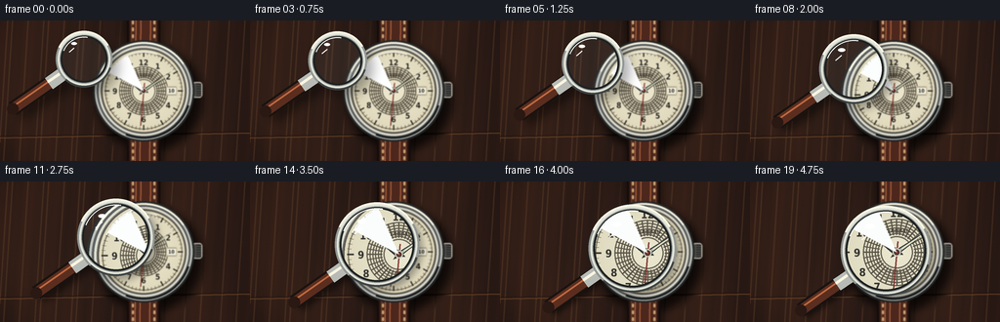
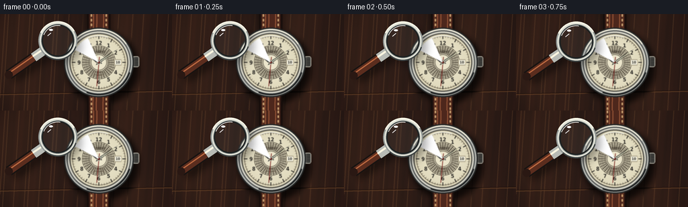

CODING AGENTS AS PIXEL WORLD MODELS
traex/GPT-5.6-Sol · phygen_067
点击播放 · 原生 RGB 像素
逐轮保存的候选
回放视频、检查图与代码变化。
每份候选均可单独播放。实际图片检查记录在下方工具轨迹中。
候选 01播放与检查图
点击播放 · 原生 RGB 像素


展开代码变化
--- 上一保存版本
+++ 本次保存版本
@@ -0,0 +1,255 @@
+from pathlib import Path
+import json, math
+import numpy as np
+from PIL import Image, ImageDraw, ImageFont, ImageFilter
+import artifact_io
+
+ROOT = Path(__file__).resolve().parent
+SPEC = json.loads((ROOT / 'task_spec.json').read_text())
+W, H, N = SPEC['width'], SPEC['height'], SPEC['frames']
+S = 4
+WS, HS = W*S, H*S
+rng = np.random.default_rng(6701)
+
+
+def font(size, bold=False):
+ name = 'DejaVuSansCondensed-Bold.ttf' if bold else 'DejaVuSans.ttf'
+ return ImageFont.truetype(name, max(1, int(size*S)))
+
+
+def pt(x, y): return (int(round(x*S)), int(round(y*S)))
+
+def centered(draw, xy, text, fnt, fill, stroke=0, stroke_fill=None):
+ x, y = pt(*xy)
+ draw.text((x, y), text, font=fnt, fill=fill, anchor='mm',
+ stroke_width=int(stroke*S), stroke_fill=stroke_fill)
+
+
+def alpha_layer(base, layer):
+ return Image.alpha_composite(base.convert('RGBA'), layer.convert('RGBA'))
+
+# --- Procedural walnut desktop, fixed through time ---
+yy, xx = np.mgrid[0:HS, 0:WS]
+xf, yf = xx/S, yy/S
+slow = 5.0*np.sin(xf*0.042 + 0.9*np.sin(yf*.027))
+fine = 2.1*np.sin(xf*.24 + yf*.022) + 1.0*np.sin(xf*.77 + yf*.055)
+noise_small = rng.normal(0, 1.15, (HS, WS))
+vign = ((xf-W/2)/(W*.72))**2 + ((yf-H/2)/(H*.90))**2
+base_arr = np.zeros((HS, WS, 3), dtype=np.float32)
+base_arr[...,0] = 50 + slow + fine + noise_small - 10*vign
+base_arr[...,1] = 31 + slow*.55 + fine*.35 + noise_small*.45 - 7*vign
+base_arr[...,2] = 24 + slow*.25 + fine*.22 + noise_small*.35 - 5*vign
+base_arr = np.clip(base_arr, 0, 255).astype(np.uint8)
+scene = Image.fromarray(base_arr, 'RGB').convert('RGBA')
+d = ImageDraw.Draw(scene, 'RGBA')
+# Fine long grain and a soft seam in the wood.
+for k in range(18):
+ x = (k*37 + 13) % 280
+ d.line([pt(x,-5), pt(x-10,150)], fill=(110,72,45,18), width=max(1,S//2))
+d.line([pt(0,119), pt(256,114)], fill=(20,10,8,45), width=1*S)
+d.line([pt(0,120), pt(256,115)], fill=(125,80,46,15), width=1*S)
+
+# Watch placement.
+CX, CY, R = 147.0, 72.0, 52.0
+# Watch and strap shadows.
+sh = Image.new('L', (WS,HS), 0); sd = ImageDraw.Draw(sh)
+sd.rounded_rectangle([*pt(CX-18, -18), *pt(CX+18, 164)], radius=pt(9,0)[0], fill=130)
+sd.ellipse([*pt(CX-R+4,CY-R+6), *pt(CX+R+8,CY+R+10)], fill=180)
+sh = sh.filter(ImageFilter.GaussianBlur(4.2*S))
+black = Image.new('RGBA',(WS,HS),(0,0,0,0)); black.putalpha(sh)
+scene = Image.alpha_composite(scene, black)
+
+d = ImageDraw.Draw(scene, 'RGBA')
+# Leather strap behind the case.
+d.rounded_rectangle([*pt(CX-17,-17), *pt(CX+17,161)], radius=7*S,
+ fill=(48,25,19,255), outline=(20,12,10,255), width=2*S)
+d.rounded_rectangle([*pt(CX-13,-16), *pt(CX+13,160)], radius=5*S,
+ fill=(77,39,28,255), outline=(111,61,39,120), width=1*S)
+# leather creases
+for xoff, al in [(-8,35),(-3,22),(7,28)]:
+ d.line([pt(CX+xoff,-5),pt(CX+xoff-1,150)], fill=(180,104,65,al), width=1*S)
+# stitching, only visible above and below case
+for y in list(range(0,20,7))+list(range(125,145,7)):
+ d.rounded_rectangle([*pt(CX-12,y),*pt(CX-10,y+4)],radius=S,
+ fill=(203,163,115,210))
+ d.rounded_rectangle([*pt(CX+10,y),*pt(CX+12,y+4)],radius=S,
+ fill=(203,163,115,210))
+
+# Crown and push details on right edge.
+d.rounded_rectangle([*pt(197,63),*pt(207,79)], radius=3*S,
+ fill=(74,73,69,255), outline=(198,196,183,255), width=S)
+for y in np.linspace(65,77,6):
+ d.line([pt(201,y),pt(206,y)], fill=(35,36,35,170), width=S)
+
+# Metallic watch case built in concentric rings.
+metal_cols = [(36,38,38,255),(190,192,186,255),(86,89,88,255),
+ (224,222,208,255),(107,107,101,255)]
+radii = [52,50,48,46,44]
+for rr, col in zip(radii, metal_cols):
+ d.ellipse([*pt(CX-rr,CY-rr),*pt(CX+rr,CY+rr)], fill=col)
+# asymmetric brushed highlights
+d.arc([*pt(CX-50,CY-50),*pt(CX+50,CY+50)], 205, 326,
+ fill=(250,246,227,220), width=2*S)
+d.arc([*pt(CX-49,CY-49),*pt(CX+49,CY+49)], 18, 112,
+ fill=(21,24,25,180), width=2*S)
+
+# Cream dial as a subtle radial and paper-texture image.
+dial_r = 43
+Y, X = np.mgrid[0:HS,0:WS]
+dist = np.sqrt((X/S-CX)**2+(Y/S-CY)**2)
+dial_noise = rng.normal(0, .75, (HS,WS))
+shade = np.clip((dist/dial_r),0,1)
+dial_rgb = np.zeros((HS,WS,4),dtype=np.uint8)
+dial_rgb[...,0] = np.clip(238 - 15*shade + dial_noise,0,255)
+dial_rgb[...,1] = np.clip(232 - 16*shade + dial_noise,0,255)
+dial_rgb[...,2] = np.clip(207 - 20*shade + dial_noise*.6,0,255)
+dial_rgb[...,3] = (dist <= dial_r).astype(np.uint8)*255
+scene = Image.alpha_composite(scene, Image.fromarray(dial_rgb,'RGBA'))
+d = ImageDraw.Draw(scene,'RGBA')
+# Dial borders and guilloche texture.
+d.ellipse([*pt(CX-43,CY-43),*pt(CX+43,CY+43)], outline=(76,72,62,255), width=S)
+d.ellipse([*pt(CX-39.5,CY-39.5),*pt(CX+39.5,CY+39.5)], outline=(120,109,87,180), width=S)
+for rr in np.arange(12,27,2.15):
+ d.ellipse([*pt(CX-rr,CY-rr),*pt(CX+rr,CY+rr)], outline=(99,92,76,22), width=S)
+# radial micro engraving at center
+for i in range(36):
+ a=2*math.pi*i/36
+ d.line([pt(CX+13*math.sin(a),CY-13*math.cos(a)),
+ pt(CX+25*math.sin(a),CY-25*math.cos(a))],
+ fill=(82,74,62,18), width=S)
+# minute and hour indices
+for i in range(60):
+ a = 2*math.pi*i/60
+ major = i%5==0
+ r1 = 35.0 if major else 37.1
+ r2 = 40.0
+ col = (45,43,39,245) if major else (70,65,57,190)
+ width = (1.25 if major else .55)*S
+ d.line([pt(CX+r1*math.sin(a),CY-r1*math.cos(a)),
+ pt(CX+r2*math.sin(a),CY-r2*math.cos(a))], fill=col, width=max(1,int(width)))
+# Numerals, upright and crisp.
+num_font = font(8.2, True)
+for n in range(1,13):
+ a = 2*math.pi*n/12
+ rr=29.2
+ # slight vertical correction for optical centering
+ centered(d,(CX+rr*math.sin(a),CY-rr*math.cos(a)+.4),str(n),num_font,(40,38,34,255))
+# Brand and fine printing; these become notably clearer in lens.
+centered(d,(CX,CY-16.0),'MERIDIAN',font(4.1,True),(69,61,50,230))
+centered(d,(CX,CY+15.0),'17 JEWELS',font(3.35,False),(87,75,59,220))
+centered(d,(CX,CY+19.0),'SWISS MADE',font(2.8,False),(95,82,64,210))
+# Tiny date aperture near 3 o'clock.
+d.rounded_rectangle([*pt(CX+23,CY-4.7),*pt(CX+34,CY+4.7)], radius=S,
+ fill=(62,59,52,255), outline=(194,183,154,255), width=S)
+d.rectangle([*pt(CX+24,CY-3.6),*pt(CX+33,CY+3.6)], fill=(240,237,219,255))
+centered(d,(CX+28.5,CY+.1),'10',font(5.1,True),(35,34,31,255))
+
+# Hands as tapered metal polygons.
+def hand(angle_deg, length, back, halfwidth, color, inner=None):
+ a=math.radians(angle_deg)
+ vx,vy=math.sin(a),-math.cos(a); px,py=-vy,vx
+ poly=[pt(CX-vx*back+px*halfwidth*.45,CY-vy*back+py*halfwidth*.45),
+ pt(CX+px*halfwidth,CY+py*halfwidth),
+ pt(CX+vx*length,CY+vy*length),
+ pt(CX-px*halfwidth,CY-py*halfwidth)]
+ d.polygon(poly,fill=(34,37,37,255))
+ # inset metallic/luminous face
+ poly2=[pt(CX+px*halfwidth*.46,CY+py*halfwidth*.46),
+ pt(CX+vx*(length-2),CY+vy*(length-2)),
+ pt(CX-px*halfwidth*.46,CY-py*halfwidth*.46)]
+ d.polygon(poly2,fill=color)
+ if inner:
+ d.line([pt(CX+vx*5,CY+vy*5),pt(CX+vx*(length-6),CY+vy*(length-6))],fill=inner,width=max(S,int(halfwidth*.45*S)))
+
+# classic 10:09 display
+hand(304.5,23,5,2.6,(163,170,160,255),(217,216,182,230))
+hand(55.0,34,6,1.75,(171,178,168,255),(224,222,187,230))
+# red seconds hand
+a=math.radians(185)
+vx,vy=math.sin(a),-math.cos(a)
+d.line([pt(CX-vx*8,CY-vy*8),pt(CX+vx*36,CY+vy*36)],fill=(116,31,27,255),width=S)
+d.ellipse([*pt(CX-3,CY-3),*pt(CX+3,CY+3)],fill=(38,39,38,255),outline=(208,201,178,255),width=S)
+d.ellipse([*pt(CX-1.2,CY-1.2),*pt(CX+1.2,CY+1.2)],fill=(128,38,29,255))
+# Watch crystal's restrained reflection.
+d.arc([*pt(CX-40,CY-40),*pt(CX+40,CY+40)],205,290,fill=(255,255,246,75),width=S)
+d.pieslice([*pt(CX-39,CY-39),*pt(CX+39,CY+39)],208,246,fill=(255,255,255,10))
+
+sharp_scene = scene.convert('RGB')
+# Slight depth-of-field outside the magnifier makes its optical action readable.
+outside_scene = sharp_scene.filter(ImageFilter.GaussianBlur(.48*S)).convert('RGBA')
+
+
+def draw_magnifier(frame_i):
+ t=frame_i/(N-1)
+ e=t*t*(3-2*t)
+ # A slow diagonal approach, decelerating as it aligns above the dial.
+ cx=86 + 53*e
+ cy=39.5 + 31.5*e - 2.0*math.sin(math.pi*e)
+ radius=29.0 + 17.2*e
+ mag=1.07 + .31*e
+ ang=math.radians(145) # handle points down-left
+ ux,uy=math.cos(ang),math.sin(ang)
+ start=(cx+ux*(radius-1),cy+uy*(radius-1))
+ end=(cx+ux*(radius+60),cy+uy*(radius+60))
+
+ frame=outside_scene.copy()
+ # Cast shadow shrinks and sharpens as the glass nears the watch face.
+ off=7.0-3.8*e
+ sm=Image.new('L',(WS,HS),0); sdraw=ImageDraw.Draw(sm)
+ sdraw.ellipse([*pt(cx-radius+off,cy-radius+off),*pt(cx+radius+off,cy+radius+off)],fill=78)
+ sdraw.line([pt(start[0]+off,start[1]+off),pt(end[0]+off,end[1]+off)],fill=125,width=13*S)
+ sm=sm.filter(ImageFilter.GaussianBlur((5.5-2.8*e)*S))
+ sl=Image.new('RGBA',(WS,HS),(0,0,0,0)); sl.putalpha(sm)
+ frame=Image.alpha_composite(frame,sl)
+
+ # Physically plausible centered magnification of the scene beneath.
+ src_r=radius/mag
+ box=(int((cx-src_r)*S),int((cy-src_r)*S),int((cx+src_r)*S),int((cy+src_r)*S))
+ lens=sharp_scene.crop(box).resize((int(2*radius*S),int(2*radius*S)),Image.Resampling.LANCZOS)
+ # The far glass starts subtly out of focus and resolves on approach.
+ blur=(1-e)*0.65*S
+ if blur>.15: lens=lens.filter(ImageFilter.GaussianBlur(blur))
+ # Gentle cool glass transmission.
+ tint=Image.new('RGBA',lens.size,(205,230,229,14+int(5*e)))
+ lens=Image.alpha_composite(lens.convert('RGBA'),tint)
+ mask=Image.new('L',lens.size,0); md=ImageDraw.Draw(mask)
+ inset=4*S
+ md.ellipse((inset,inset,lens.size[0]-inset-1,lens.size[1]-inset-1),fill=255)
+ frame.paste(lens,(int((cx-radius)*S),int((cy-radius)*S)),mask)
+
+ fd=ImageDraw.Draw(frame,'RGBA')
+ # Handle (under ring), walnut grip and polished ferrule.
+ fd.line([pt(*start),pt(*end)],fill=(24,19,17,255),width=15*S)
+ fd.line([pt(*start),pt(*end)],fill=(91,45,30,255),width=11*S)
+ # longitudinal warm highlight offset perpendicular to grip
+ px,py=-uy,ux
+ fd.line([pt(start[0]+px*2,start[1]+py*2),pt(end[0]+px*2,end[1]+py*2)],
+ fill=(189,105,64,130),width=2*S)
+ fd.ellipse([*pt(end[0]-6,end[1]-6),*pt(end[0]+6,end[1]+6)],fill=(42,24,19,255))
+ # silver neck
+ neck2=(cx+ux*(radius+15),cy+uy*(radius+15))
+ fd.line([pt(*start),pt(*neck2)],fill=(184,187,181,255),width=14*S)
+ fd.line([pt(start[0]+px*2,start[1]+py*2),pt(neck2[0]+px*2,neck2[1]+py*2)],
+ fill=(249,245,224,205),width=3*S)
+
+ # Layered metal rim.
+ bb=[*pt(cx-radius,cy-radius),*pt(cx+radius,cy+radius)]
+ fd.ellipse(bb,outline=(29,33,33,255),width=7*S)
+ fd.ellipse(bb,outline=(145,151,148,255),width=5*S)
+ fd.ellipse([*pt(cx-radius+2,cy-radius+2),*pt(cx+radius-2,cy+radius-2)],
+ outline=(228,229,217,255),width=2*S)
+ fd.arc(bb,205,330,fill=(250,249,231,235),width=2*S)
+ fd.arc(bb,18,132,fill=(62,68,68,240),width=2*S)
+ # Glass glints: fixed to the lens, changing slightly with proximity.
+ fd.arc([*pt(cx-radius+6,cy-radius+6),*pt(cx+radius-6,cy+radius-6)],
+ 202,279,fill=(255,255,250,180),width=1*S)
+ fd.ellipse([*pt(cx-radius*.46,cy-radius*.60),*pt(cx-radius*.25,cy-radius*.50)],
+ fill=(255,255,255,105))
+ # tiny reflected streak
+ fd.line([pt(cx-radius*.53,cy-radius*.25),pt(cx-radius*.35,cy-radius*.40)],
+ fill=(255,255,255,80),width=S)
+ return frame.convert('RGB').resize((W,H),Image.Resampling.LANCZOS)
+
+frames=np.stack([np.asarray(draw_magnifier(i),dtype=np.uint8) for i in range(N)])
+artifact_io.save(frames, ROOT)
+print(f'saved {frames.shape} RGB frames at {SPEC["fps"]} fps')
可观测工具轨迹
实际执行的命令与返回图片。
命令 1exit 0
/bin/bash -lc "ls -la && printf '\\n--- prompt.txt ---\\n' && cat prompt.txt && printf '\\n--- GENERATION_RULES.md ---\\n' && cat GENERATION_RULES.md"
命令 2exit 0
/bin/bash -lc "printf '%s\\n' '--- task_spec.json ---' && cat task_spec.json && printf '%s\\n' '--- files ---' && find . -maxdepth 2 -type f -printf '%p\\n' | sort"
命令 3exit 0
/bin/bash -lc "sed -n '1,240p' artifact_io.py"
命令 4exit 0
/bin/bash -lc "cat > generate.py <<'PY'
from pathlib import Path
import json, math
import numpy as np
from PIL import Image, ImageDraw, ImageFont, ImageFilter
import artifact_io
ROOT = Path(__file__).resolve().parent
SPEC = json.loads((ROOT / 'task_spec.json').read_text())
W, H, N = SPEC['width'], SPEC['height'], SPEC['frames']
S = 4
WS, HS = W*S, H*S
rng = np.random.default_rng(6701)
def font(size, bold=False):
name = 'DejaVuSansCondensed-Bold.ttf' if bold else 'DejaVuSans.ttf'
return ImageFont.truetype(name, max(1, int(size*S)))
def pt(x, y): return (int(round(x*S)), int(round(y*S)))
def centered(draw, xy, text, fnt, fill, stroke=0, stroke_fill=None):
x, y = pt(*xy)
draw.text((x, y), text, font=fnt, fill=fill, anchor='mm',
stroke_width=int(stroke*S), stroke_fill=stroke_fill)
def alpha_layer(base, layer):
return Image.alpha_composite(base.convert('RGBA'), layer.convert('RGBA'))
# --- Procedural walnut desktop, fixed through time ---
yy, xx = np.mgrid[0:HS, 0:WS]
xf, yf = xx/S, yy/S
slow = 5.0*np.sin(xf*0.042 + 0.9*np.sin(yf*.027))
fine = 2.1*np.sin(xf*.24 + yf*.022) + 1.0*np.sin(xf*.77 + yf*.055)
noise_small = rng.normal(0, 1.15, (HS, WS))
vign = ((xf-W/2)/(W*.72))**2 + ((yf-H/2)/(H*.90))**2
base_arr = np.zeros((HS, WS, 3), dtype=np.float32)
base_arr[...,0] = 50 + slow + fine + noise_small - 10*vign
base_arr[...,1] = 31 + slow*.55 + fine*.35 + noise_small*.45 - 7*vign
base_arr[...,2] = 24 + slow*.25 + fine*.22 + noise_small*.35 - 5*vign
base_arr = np.clip(base_arr, 0, 255).astype(np.uint8)
scene = Image.fromarray(base_arr, 'RGB').convert('RGBA')
d = ImageDraw.Draw(scene, 'RGBA')
# Fine long grain and a soft seam in the wood.
for k in range(18):
x = (k*37 + 13) % 280
d.line([pt(x,-5), pt(x-10,150)], fill=(110,72,45,18), width=max(1,S//2))
d.line([pt(0,119), pt(256,114)], fill=(20,10,8,45), width=1*S)
d.line([pt(0,120), pt(256,115)], fill=(125,80,46,15), width=1*S)
# Watch placement.
CX, CY, R = 147.0, 72.0, 52.0
# Watch and strap shadows.
sh = Image.new('L', (WS,HS), 0); sd = ImageDraw.Draw(sh)
sd.rounded_rectangle([*pt(CX-18, -18), *pt(CX+18, 164)], radius=pt(9,0)[0], fill=130)
sd.ellipse([*pt(CX-R+4,CY-R+6), *pt(CX+R+8,CY+R+10)], fill=180)
sh = sh.filter(ImageFilter.GaussianBlur(4.2*S))
black = Image.new('RGBA',(WS,HS),(0,0,0,0)); black.putalpha(sh)
scene = Image.alpha_composite(scene, black)
d = ImageDraw.Draw(scene, 'RGBA')
# Leather strap behind the case.
d.rounded_rectangle([*pt(CX-17,-17), *pt(CX+17,161)], radius=7*S,
fill=(48,25,19,255), outline=(20,12,10,255), width=2*S)
d.rounded_rectangle([*pt(CX-13,-16), *pt(CX+13,160)], radius=5*S,
fill=(77,39,28,255), outline=(111,61,39,120), width=1*S)
# leather creases
for xoff, al in [(-8,35),(-3,22),(7,28)]:
d.line([pt(CX+xoff,-5),pt(CX+xoff-1,150)], fill=(180,104,65,al), width=1*S)
# stitching, only visible above and below case
for y in list(range(0,20,7))+list(range(125,145,7)):
d.rounded_rectangle([*pt(CX-12,y),*pt(CX-10,y+4)],radius=S,
fill=(203,163,115,210))
d.rounded_rectangle([*pt(CX+10,y),*pt(CX+12,y+4)],radius=S,
fill=(203,163,115,210))
# Crown and push details on right edge.
d.rounded_rectangle([*pt(197,63),*pt(207,79)], radius=3*S,
fill=(74,73,69,255), outline=(198,196,183,255), width=S)
for y in np.linspace(65,77,6):
d.line([pt(201,y),pt(206,y)], fill=(35,36,35,170), width=S)
# Metallic watch case built in concentric rings.
metal_cols = [(36,38,38,255),(190,192,186,255),(86,89,88,255),
(224,222,208,255),(107,107,101,255)]
radii = [52,50,48,46,44]
for rr, col in zip(radii, metal_cols):
d.ellipse([*pt(CX-rr,CY-rr),*pt(CX+rr,CY+rr)], fill=col)
# asymmetric brushed highlights
d.arc([*pt(CX-50,CY-50),*pt(CX+50,CY+50)], 205, 326,
fill=(250,246,227,220), width=2*S)
d.arc([*pt(CX-49,CY-49),*pt(CX+49,CY+49)], 18, 112,
fill=(21,24,25,180), width=2*S)
# Cream dial as a subtle radial and paper-texture image.
dial_r = 43
Y, X = np.mgrid[0:HS,0:WS]
dist = np.sqrt((X/S-CX)**2+(Y/S-CY)**2)
dial_noise = rng.normal(0, .75, (HS,WS))
shade = np.clip((dist/dial_r),0,1)
dial_rgb = np.zeros((HS,WS,4),dtype=np.uint8)
dial_rgb[...,0] = np.clip(238 - 15*shade + dial_noise,0,255)
dial_rgb[...,1] = np.clip(232 - 16*shade + dial_noise,0,255)
dial_rgb[...,2] = np.clip(207 - 20*shade + dial_noise*.6,0,255)
dial_rgb[...,3] = (dist <= dial_r).astype(np.uint8)*255
scene = Image.alpha_composite(scene, Image.fromarray(dial_rgb,'RGBA'))
d = ImageDraw.Draw(scene,'RGBA')
# Dial borders and guilloche texture.
d.ellipse([*pt(CX-43,CY-43),*pt(CX+43,CY+43)], outline=(76,72,62,255), width=S)
d.ellipse([*pt(CX-39.5,CY-39.5),*pt(CX+39.5,CY+39.5)], outline=(120,109,87,180), width=S)
for rr in np.arange(12,27,2.15):
d.ellipse([*pt(CX-rr,CY-rr),*pt(CX+rr,CY+rr)], outline=(99,92,76,22), width=S)
# radial micro engraving at center
for i in range(36):
a=2*math.pi*i/36
d.line([pt(CX+13*math.sin(a),CY-13*math.cos(a)),
pt(CX+25*math.sin(a),CY-25*math.cos(a))],
fill=(82,74,62,18), width=S)
# minute and hour indices
for i in range(60):
a = 2*math.pi*i/60
major = i%5==0
r1 = 35.0 if major else 37.1
r2 = 40.0
col = (45,43,39,245) if major else (70,65,57,190)
width = (1.25 if major else .55)*S
d.line([pt(CX+r1*math.sin(a),CY-r1*math.cos(a)),
pt(CX+r2*math.sin(a),CY-r2*math.cos(a))], fill=col, width=max(1,int(width)))
# Numerals, upright and crisp.
num_font = font(8.2, True)
for n in range(1,13):
a = 2*math.pi*n/12
rr=29.2
# slight vertical correction for optical centering
centered(d,(CX+rr*math.sin(a),CY-rr*math.cos(a)+.4),str(n),num_font,(40,38,34,255))
# Brand and fine printing; these become notably clearer in lens.
centered(d,(CX,CY-16.0),'MERIDIAN',font(4.1,True),(69,61,50,230))
centered(d,(CX,CY+15.0),'17 JEWELS',font(3.35,False),(87,75,59,220))
centered(d,(CX,CY+19.0),'SWISS MADE',font(2.8,False),(95,82,64,210))
# Tiny date aperture near 3 o'clock.
d.rounded_rectangle([*pt(CX+23,CY-4.7),*pt(CX+34,CY+4.7)], radius=S,
fill=(62,59,52,255), outline=(194,183,154,255), width=S)
d.rectangle([*pt(CX+24,CY-3.6),*pt(CX+33,CY+3.6)], fill=(240,237,219,255))
centered(d,(CX+28.5,CY+.1),'10',font(5.1,True),(35,34,31,255))
# Hands as tapered metal polygons.
def hand(angle_deg, length, back, halfwidth, color, inner=None):
a=math.radians(angle_deg)
vx,vy=math.sin(a),-math.cos(a); px,py=-vy,vx
poly=[pt(CX-vx*back+px*halfwidth*.45,CY-vy*back+py*halfwidth*.45),
pt(CX+px*halfwidth,CY+py*halfwidth),
pt(CX+vx*length,CY+vy*length),
pt(CX-px*halfwidth,CY-py*halfwidth)]
d.polygon(poly,fill=(34,37,37,255))
# inset metallic/luminous face
poly2=[pt(CX+px*halfwidth*.46,CY+py*halfwidth*.46),
pt(CX+vx*(length-2),CY+vy*(length-2)),
pt(CX-px*halfwidth*.46,CY-py*halfwidth*.46)]
d.polygon(poly2,fill=color)
if inner:
d.line([pt(CX+vx*5,CY+vy*5),pt(CX+vx*(length-6),CY+vy*(length-6))],fill=inner,width=max(S,int(halfwidth*.45*S)))
# classic 10:09 display
hand(304.5,23,5,2.6,(163,170,160,255),(217,216,182,230))
hand(55.0,34,6,1.75,(171,178,168,255),(224,222,187,230))
# red seconds hand
a=math.radians(185)
vx,vy=math.sin(a),-math.cos(a)
d.line([pt(CX-vx*8,CY-vy*8),pt(CX+vx*36,CY+vy*36)],fill=(116,31,27,255),width=S)
d.ellipse([*pt(CX-3,CY-3),*pt(CX+3,CY+3)],fill=(38,39,38,255),outline=(208,201,178,255),width=S)
d.ellipse([*pt(CX-1.2,CY-1.2),*pt(CX+1.2,CY+1.2)],fill=(128,38,29,255))
# Watch crystal's restrained reflection.
d.arc([*pt(CX-40,CY-40),*pt(CX+40,CY+40)],205,290,fill=(255,255,246,75),width=S)
d.pieslice([*pt(CX-39,CY-39),*pt(CX+39,CY+39)],208,246,fill=(255,255,255,10))
sharp_scene = scene.convert('RGB')
# Slight depth-of-field outside the magnifier makes its optical action readable.
outside_scene = sharp_scene.filter(ImageFilter.GaussianBlur(.48*S)).convert('RGBA')
def draw_magnifier(frame_i):
t=frame_i/(N-1)
e=t*t*(3-2*t)
# A slow diagonal approach, decelerating as it aligns above the dial.
cx=86 + 53*e
cy=39.5 + 31.5*e - 2.0*math.sin(math.pi*e)
radius=29.0 + 17.2*e
mag=1.07 + .31*e
ang=math.radians(145) # handle points down-left
ux,uy=math.cos(ang),math.sin(ang)
start=(cx+ux*(radius-1),cy+uy*(radius-1))
end=(cx+ux*(radius+60),cy+uy*(radius+60))
frame=outside_scene.copy()
# Cast shadow shrinks and sharpens as the glass nears the watch face.
off=7.0-3.8*e
sm=Image.new('L',(WS,HS),0); sdraw=ImageDraw.Draw(sm)
sdraw.ellipse([*pt(cx-radius+off,cy-radius+off),*pt(cx+radius+off,cy+radius+off)],fill=78)
sdraw.line([pt(start[0]+off,start[1]+off),pt(end[0]+off,end[1]+off)],fill=125,width=13*S)
sm=sm.filter(ImageFilter.GaussianBlur((5.5-2.8*e)*S))
sl=Image.new('RGBA',(WS,HS),(0,0,0,0)); sl.putalpha(sm)
frame=Image.alpha_composite(frame,sl)
# Physically plausible centered magnification of the scene beneath.
src_r=radius/mag
box=(int((cx-src_r)*S),int((cy-src_r)*S),int((cx+src_r)*S),int((cy+src_r)*S))
lens=sharp_scene.crop(box).resize((int(2*radius*S),int(2*radius*S)),Image.Resampling.LANCZOS)
# The far glass starts subtly out of focus and resolves on approach.
blur=(1-e)*0.65*S
if blur>.15: lens=lens.filter(ImageFilter.GaussianBlur(blur))
# Gentle cool glass transmission.
tint=Image.new('RGBA',lens.size,(205,230,229,14+int(5*e)))
lens=Image.alpha_composite(lens.convert('RGBA'),tint)
mask=Image.new('L',lens.size,0); md=ImageDraw.Draw(mask)
inset=4*S
md.ellipse((inset,inset,lens.size[0]-inset-1,lens.size[1]-inset-1),fill=255)
frame.paste(lens,(int((cx-radius)*S),int((cy-radius)*S)),mask)
fd=ImageDraw.Draw(frame,'RGBA')
# Handle (under ring), walnut grip and polished ferrule.
fd.line([pt(*start),pt(*end)],fill=(24,19,17,255),width=15*S)
fd.line([pt(*start),pt(*end)],fill=(91,45,30,255),width=11*S)
# longitudinal warm highlight offset perpendicular to grip
px,py=-uy,ux
fd.line([pt(start[0]+px*2,start[1]+py*2),pt(end[0]+px*2,end[1]+py*2)],
fill=(189,105,64,130),width=2*S)
fd.ellipse([*pt(end[0]-6,end[1]-6),*pt(end[0]+6,end[1]+6)],fill=(42,24,19,255))
# silver neck
neck2=(cx+ux*(radius+15),cy+uy*(radius+15))
fd.line([pt(*start),pt(*neck2)],fill=(184,187,181,255),width=14*S)
fd.line([pt(start[0]+px*2,start[1]+py*2),pt(neck2[0]+px*2,neck2[1]+py*2)],
fill=(249,245,224,205),width=3*S)
# Layered metal rim.
bb=[*pt(cx-radius,cy-radius),*pt(cx+radius,cy+radius)]
fd.ellipse(bb,outline=(29,33,33,255),width=7*S)
fd.ellipse(bb,outline=(145,151,148,255),width=5*S)
fd.ellipse([*pt(cx-radius+2,cy-radius+2),*pt(cx+radius-2,cy+radius-2)],
outline=(228,229,217,255),width=2*S)
fd.arc(bb,205,330,fill=(250,249,231,235),width=2*S)
fd.arc(bb,18,132,fill=(62,68,68,240),width=2*S)
# Glass glints: fixed to the lens, changing slightly with proximity.
fd.arc([*pt(cx-radius+6,cy-radius+6),*pt(cx+radius-6,cy+radius-6)],
202,279,fill=(255,255,250,180),width=1*S)
fd.ellipse([*pt(cx-radius*.46,cy-radius*.60),*pt(cx-radius*.25,cy-radius*.50)],
fill=(255,255,255,105))
# tiny reflected streak
fd.line([pt(cx-radius*.53,cy-radius*.25),pt(cx-radius*.35,cy-radius*.40)],
fill=(255,255,255,80),width=S)
return frame.convert('RGB').resize((W,H),Image.Resampling.LANCZOS)
frames=np.stack([np.asarray(draw_magnifier(i),dtype=np.uint8) for i in range(N)])
artifact_io.save(frames, ROOT)
print(f'saved {frames.shape} RGB frames at {SPEC[\"fps\"]} fps')
PY
python generate.py
ls -lh pixels.npz inspection.png transition_check.png index.html frames/00.png frames/19.png"命令 5exit 0
/bin/bash -lc "python - <<'PY'
import json, numpy as np
from PIL import Image
z=np.load('pixels.npz')['pixels']
s=json.load(open('task_spec.json'))
assert z.shape==(s['height'],s['width'],s['frames'])
assert z.dtype==np.uint32
ims=np.stack([np.asarray(Image.open(f'frames/{i:02d}.png')) for i in range(s['frames'])])
assert ims.shape==(20,144,256,3) and ims.dtype==np.uint8
print('validated',ims.shape,ims.dtype,'ranges',ims.min(),ims.max())
print('mean adjacent RGB absolute differences:', [round(float(np.abs(ims[i].astype(int)-ims[i-1]).mean()),2) for i in range(1,20)])
print('first-last difference',round(float(np.abs(ims[-1].astype(int)-ims[0]).mean()),2))
PY"保存候选 1 份；完成命令 5 次；可验证图片返回 0 张。原始 API 响应与完整日志保留在本地。